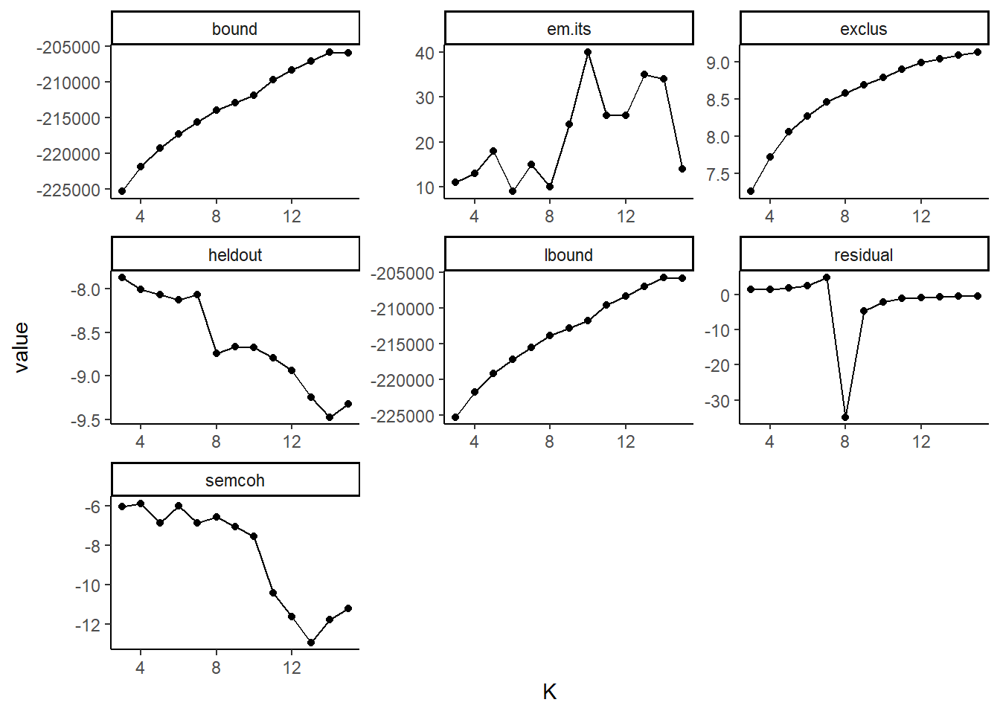
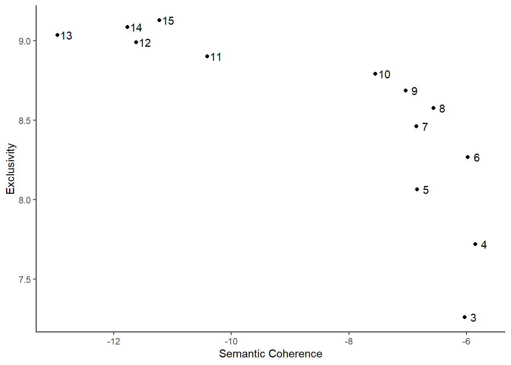
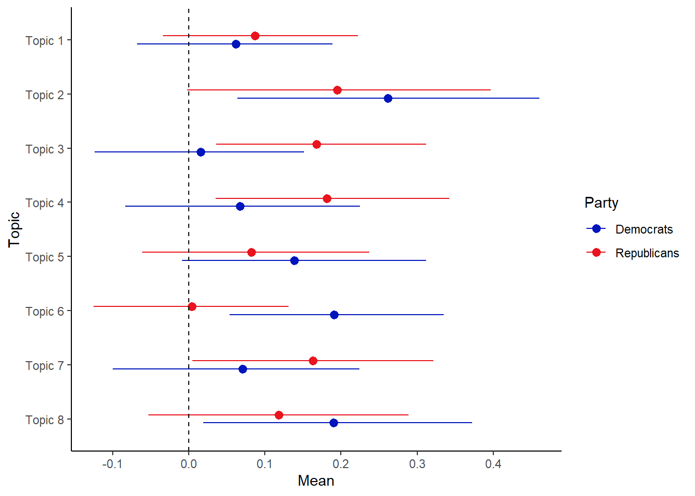

11.3 Structural Topic Model
Besides LDA, various other methods for unsupervised classification exist, such as hierarchical clustering, k-means, and various other mixed membership models. Each of them has its specific advantages and problems, and it often depends on the goal of the researcher to decide which method to use. One new and flexible method is the Structural Topic Model or STM. In R, we can find this method in the stm package (Roberts et al., 2019).
One of the outstanding features of stm is topical prevalence. This means that we can include covariates to help identify the correct model and better understand the topics the model generates (Roberts et al., 2014). For example, we can add information on time to study how topics change over the years; actors on how they differ between different authors; and any other possible variable to see how they differ between them. One of the main advantages of STM is that, unlike in LDA, we are not required to set any parameters in advance. In LDA, these parameters - \(\alpha\) (the degree of mixture of topics a document has) and \(\beta\) (the degree of mixture of words that a topic has) - have to be set beforehand based on previous knowledge. Yet, this knowledge is not always present and we often need several iterations before we settle upon a correct number. In STM, we use the metadata to set these parameters.
Figure 11.1: Plate diagram for a Structucal Topic Model.
Figure 11.1 shows stm in the form of a plate diagram. Here, \(X\) refers to the prevalence metadata; \(\gamma\), the metadata weights; \(\Sigma\), the topic covariances; \(\theta\), the document prevalence; \(z\), the per-word topic; \(w\), the observed word; \(Y\), the content metadata; \(\beta\), the topic content; \(N\), the number of words in a document; and \(M\), the number of documents in the corpus.
To run stm in R, we have to load the package, set a seed, convert our dfm to the stm format and place our documents, vocabulary (the tokens) and any other data in three separate objects (for later convenience):
library(stm)
library(quanteda)
set.seed(42)
data_inaugural_stm <- convert(data_inaugural_dfm, to = "stm")
documents <- data_inaugural_stm$documents
vocabulary <- data_inaugural_stm$vocab
meta <- data_inaugural_stm$metaThe first thing we have to do is find the number of topics we need. In the stm package, we can do this by using a function called searchK. Here, we specify a range of values that could include the ‘correct’ number of topics, which we then run and collect. Afterwards, we then look at several goodness-of-fit measures to assess which number of topics (which k) has the best fit for the data. These measures include exclusivity, semantic coherence, held-out likelihood, bound, lbound, and residual dispersion. Here, we run this for 2 to 15 possible topics.
In our code, we specify our documents, our tokens (the vocabulary), and our meta-data. Moreover, as our prevalence, we include parameters for Year and Party, as we expect the content of the topics to differ between both the Republican and Democratic party, as well as over time:
findingk <- searchK(documents, vocabulary, k, prevalence =~ Party + s(Year), data = meta, verbose=TRUE)findingk_results <- as.data.frame(matrix(unlist(findingk$results), nrow=length(unlist(findingk$results[1]))))
names <- names(findingk$results)
names(findingk_results) <- namesLooking at findingk_results we find various values. The first, exclusivity, refers to the occurrence that when words have a high probability under one topic, they have a low probability under others. Related to this is semantic coherence which happens when the most probable words in a topic should occur in the same document. Held-out (or held-out log-likelihood) is the likelihood of our model on data that was not used in the initial estimation (the lower the better), while residuals refer to the difference between a data point and the mean value that the model predicts for that data point (which we want to be 1, indicating a standard distribution). Finally, bound and lbound refer to a model’s internal measure of fit. Here, we will be looking for the number of topics, that balance the exclusivity and the semantic coherence, have a residual around 1, and a low held-out. To make this simpler, we visualise our data. In the first graph we plot all the values, while in the second, we only look at the exclusivity and the semantic coherence (as they are the most important):
library(reshape2)
findingk_melt <- melt(findingk_results, id="K")
findingk_melt$variable <- as.character(findingk_melt$variable)
findingk$K <- as.factor(findingk_results$K)
ggplot(findingk_melt, aes(K, value)) +
geom_point()+
geom_line()+
facet_wrap(~ variable, scales = "free")+
theme_classic()
ggplot(findingk_results, aes(semcoh, exclus)) +
geom_point()+
geom_text(data=findingk_results, label=findingk$K, nudge_x = 0.15)+
scale_x_continuous("Semantic Coherence")+
scale_y_continuous("Exclusivity")+
theme_classic()
Based on these graphs, we decide upon 8 topics. The main reason for this is that for this number of topics, there is a high semantic coherence given the exclusivity. We can now run our stm model, using spectral initialization and a topical prevalence including both the Party and the Year of the inauguration. Also, we have a look at the topics, and the words with the highest probability attached to them:
n_topics <- 8
output_stm <- stm(documents, vocabulary, K = n_topics, prevalence =~ Party + s(Year), data = meta, init.type = "Spectral", verbose=TRUE)## Topic 1 Top Words:
## Highest Prob: free, peace, world, shall, freedom, must, faith
## FREX: strive, free, peoples, everywhere, truth, man's, learned
## Lift: abhorring, absorbing, abstractions, acquire, aggressor, amass, andes
## Score: anguished, productivity, strive, trial, learned, europe, defines
## Topic 2 Top Words:
## Highest Prob: us, new, world, let, can, people, america
## FREX: let, century, together, new, weapons, voices, abroad
## Lift: 200th, 20th, dawn, explore, micah, moon, music
## Score: attempting, nuclear, let, celebrate, voices, abroad, dawn
## Topic 3 Top Words:
## Highest Prob: us, must, world, government, people, america, can
## FREX: civilization, republic, experiment, normal, relationship, order, industrial
## Lift: deliberate, inspiration, intention, regards, tremendous, unshaken, abnormal
## Score: accompanied, supreme, regards, deliberate, inspiration, unshaken, righteousness
## Topic 4 Top Words:
## Highest Prob: us, america, nation, can, must, new, people
## FREX: story, thank, president, defend, everyone, children, america
## Lift: breeze, democracy's, january, page, angel, begins, blowing
## Score: allowing, story, breeze, talk, crucial, everyone, virus
## Topic 5 Top Words:
## Highest Prob: freedom, nation, people, america, government, know, democracy
## FREX: speaks, mind, democracy, liberty, seen, came, millions
## Lift: abreast, absence, admiration, agent, amount, aspires, attempts
## Score: charta, speaks, paint, disaster, mind, defended, seen
## Topic 6 Top Words:
## Highest Prob: us, must, nation, people, can, new, every
## FREX: generation, journey, union, change, covenant, creed, enduring
## Lift: demanded, mastery, span, storms, absolutism, abundantly, afghanistan
## Score: abundantly, covenant, journey, mastery, storms, demanded, span
## Topic 7 Top Words:
## Highest Prob: can, world, people, peace, nations, must, government
## FREX: settlement, enforcement, countries, desire, party, international, property
## Lift: aided, eighteenth, abilities, abound, abounding, absurd, acceptance
## Score: abound, enforcement, contributed, settlement, property, major, eighteenth
## Topic 8 Top Words:
## Highest Prob: upon, government, shall, can, must, great, may
## FREX: army, interstate, negro, executive, tariff, business, proper
## Lift: cuba, incoming, type, affected, amendments, antitrust, army
## Score: tariff, interstate, army, negro, policy, proper, businessHere, we see that the word us is dominant in most topics, making it a candidate for removal as a stop word in a future analysis. Looking closer, we find that the first topic refers to peace, the second, third and seventh to the world, the fourth and sixth to America, and the eighth to the government.
Finally, we can see whether there is any relation between these topics and any of the parameters we included. Here, let us look at any existing differences between the two parties:
While we can visualise this with the plot.estimateEffect option, the visualisation is far from ideal. Thus, let us use some data-wrangling and make the plot ourselves:
estimate_data <- plot.estimateEffect(est_assoc_effect, "Party", method = "pointestimate", model = output_stm, omit.plot = TRUE)
estimate_graph_means <- estimate_data$means
estimate_graph_means <- data.frame(matrix(unlist(estimate_graph_means), nrow=length(estimate_graph_means), byrow=TRUE))
estimate_graph_means <- data.frame(c(rep("Republicans", 8), rep("Democrats", 8)), c(estimate_graph_means$X1,estimate_graph_means$X2))
estimate_graph_cis <- estimate_data$cis
estimate_graph_cis <- data.frame(matrix(unlist(estimate_graph_cis), nrow=length(estimate_graph_cis), byrow=TRUE))
estimate_graph_cis <- data.frame(c(estimate_graph_cis$X1,estimate_graph_cis$X3), c(estimate_graph_cis$X2,estimate_graph_cis$X4))
Topic <- c("Topic 1", "Topic 2", "Topic 3", "Topic 4","Topic 5", "Topic 6", "Topic 7", "Topic 8", "Topic 1", "Topic 2", "Topic 3", "Topic 4","Topic 5", "Topic 6", "Topic 7", "Topic 8")
estimate_graph <- cbind(Topic, estimate_graph_means,estimate_graph_cis)
names(estimate_graph) <- c("Topic","Party","Mean", "min", "max")
estimate_graph$Party <- as.factor(estimate_graph$Party)
estimate_graph$Topic <- as.factor(estimate_graph$Topic)
estimate_graph$Topic <- factor(estimate_graph$Topic, levels=rev(levels(estimate_graph$Topic)))Now, let us plot our intervals:
ggplot(estimate_graph, aes(Mean, Topic)) +
geom_pointrange(aes(xmin = min, xmax = max, color = Party),
position = position_dodge(0.3))+
geom_vline(xintercept = 0,
linetype="dashed", size=0.5)+
scale_color_manual(values = c("#0015BC", "#E9141D"))+
theme_classic()## Warning: Using `size` aesthetic for lines was deprecated in ggplot2 3.4.0.
## ℹ Please use `linewidth` instead.
## This warning is displayed once every 8 hours.
## Call `lifecycle::last_lifecycle_warnings()` to see where this warning was
## generated.
Here, we find that while the averages for the topic do seem to differ a little between both of the parties, all the intervals are overlapping, indicating that they are not that different.